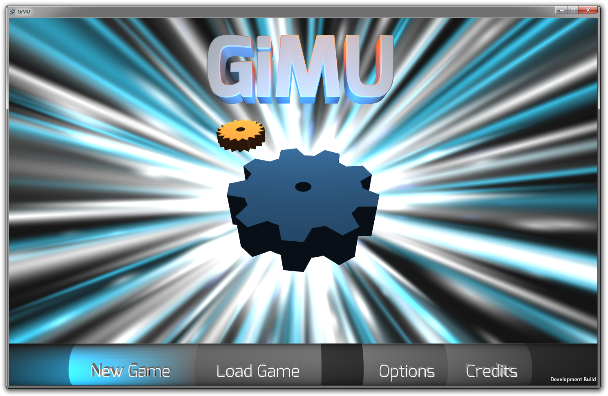

Glowyglowy Menus
February 1, 2013
I've been working on GiMU on and off and I couldn't resist showing you something absolutley beautifal.
And by that I mean the GiMU main menu:

You might be surprised to hear that this is an actual screenshot
I found the particle effects in the Asset Store for free and were made by Unity...
The actual menu is almost done, though; the last step is to make the buttons actually do things when you interact with them.
I have very interesting priorities as you can probably tell...
Also, with my comment about Unity 4 probably breaking things, it turns out I was mostly wrong. I say mostly because the only thing that I had to rework was animations. So Frigganobb isn't rotating. I'm working on it. It's not going too well, but I'm working on it.